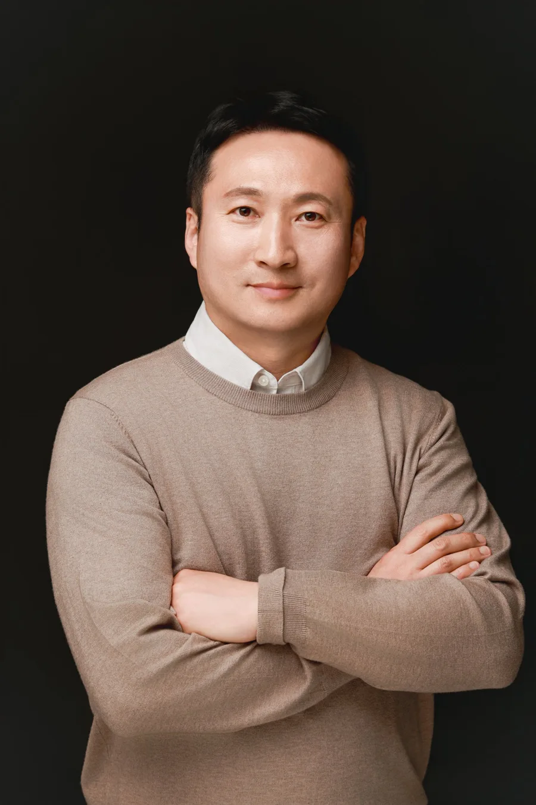
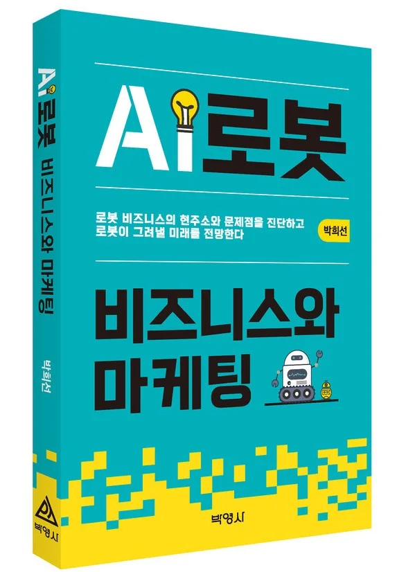
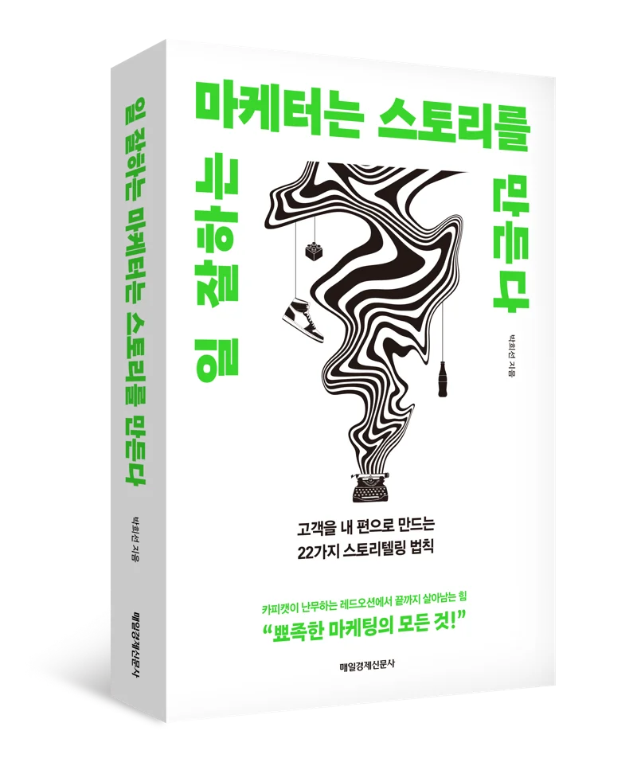

신사업 기획 · 발굴
회사의 자산과 시장 기회를 연결해 해볼 만한 신사업을 찾고 구체화합니다.
- 사업 기회 발굴과 아이템 검증
- 비즈니스 모델과 수익 구조 설계
- 공모전 · 사내 신사업 제안서 코칭
신사업 기획 · 발굴 · 사업화 경력
2023 유니커스 신사업 공모전 (KT·신한은행 주최)
스토리텔링 마케팅 · AI로봇 비즈니스 저서

박희선은 이동통신 부가서비스와 콘텐츠에서 시작해 금융, 블록체인, AI와 로보틱스까지 새로운 기술이 등장하는 자리마다 신사업을 기획하고 시장에 내놓는 일을 해 왔습니다.
대동로보틱스에서 로봇사업본부를 이끌며 로봇을 실제 사업으로 만드는 과정을 현장에서 겪었고, 그 경험을 두 권의 책으로 정리했습니다. 좋은 기술도 고객이 이해하는 이야기가 있어야 팔린다는 것이 Storypacker라는 이름에 담긴 생각입니다.
회사의 자산과 시장 기회를 연결해 해볼 만한 신사업을 찾고 구체화합니다.
기술 검증 이후 실제 고객과 매출로 이어지는 단계를 설계합니다.
고객을 내 편으로 만드는 브랜드 · 제품 이야기를 구조부터 함께 만듭니다.
저서를 바탕으로 기업, 기관, 대학에서 강연과 실습 워크숍을 진행합니다.
사업 현황과 기술, 고객을 듣고 풀어야 할 문제를 정리합니다.
시장 · 경쟁 · 고객 조사로 사업 기회와 이야기의 재료를 모읍니다.
무엇에 집중하고 무엇을 버릴지 정하는 가장 어려운 단계입니다.
사업계획, 피치 스토리, 캠페인 등 실제 결과물로 만듭니다.
시장 반응을 확인하고 팀이 이어서 실행할 수 있게 정리합니다.

로봇 비즈니스의 현주소와 문제점을 진단하고 로봇이 그려낼 미래를 전망한다
로봇사업본부를 이끈 현장 경험을 바탕으로, AI와 결합한 로봇 산업이 지금 어디에 와 있고 무엇이 사업화를 가로막는지 짚습니다. 로봇을 기술이 아닌 비즈니스와 마케팅의 관점에서 바라보고, 앞으로 열릴 시장과 기회를 전망합니다.

고객을 내 편으로 만드는 22가지 스토리텔링 법칙
비슷한 제품과 카피캣이 넘쳐나는 시장에서 브랜드가 끝까지 살아남으려면 고객이 기억하고 공감하는 이야기가 필요합니다. 마케터가 실무에서 바로 쓸 수 있는 스토리텔링 원칙 22가지를 사례와 함께 정리했습니다.
좋은 기술은 스스로 팔리지 않습니다. 고객이 이해하는 이야기가 있어야 사업이 됩니다.
신사업 · AI · 로보틱스 컨설팅, 강연, 출판 관련 문의를 받습니다. 회사 소개와 고민하고 계신 상황을 간단히 적어 보내 주세요.